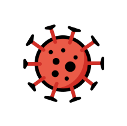

Point de départ 
- Maladies pouvant apparaitre dans le jeu :
- Condition de victoire :
- Condition de défaite :
- Nombre de mort > 50% du nombre d'habitant
- Humeur de la population égale à 0%
- Fond = 0
- Mettez en place différentes actions dans votre pays afin d'endiguer la maladie
Les épidémies seront de plus en plus courante dans les années à venir à cause du réchauffement climatique et de la surpopulation...
| Covid | Ebola | Variole | |
|---|---|---|---|
| Propagation | Forte | Faible | Forte |
| Létalité | Faible | Modérée | Forte (1/5) |
| Vaccin | Facile | Compliqué | Facile |
Pour gagner au jeu, il faut que la maladie soit totalement disparue dans votre pays.
Vous devez faire attention à certains paramètres pour ne pas perdre.
| Actions possible | Coût | Bénéfice | Humeur |
|---|---|---|---|
| Fermer les frontières | -20% de gain | -20% de cas de contaminations | -10 % d'humeur de la population |
| Masques | -5% de gains | -5% de cas de contaminations | -20 % d'humeur de la population |
| Distanciel | -5% de gains | -5% de cas de contaminations | -10 % d'humeur de la population |
| Confinement | -50% de gains | -80% de cas de contaminations | -50 % d'humeur de la population |
| Vaccination | -50% de gains | -50% de cas de contaminations | -5 % d'humeur de la population |
| Indemnités | -20% de gains | X | +40 % d'humeur de la population |
| Tester la population | -30% de gains | -20% de cas de contaminations | -5 % d'humeur de la population |
| Quarantaine | -5% de gains | -5% de cas de contaminations | -5 % d'humeur de la population |
| Couvre feu | -20% de gains | -20% de cas de contaminations | -20% d'humeur de la population |